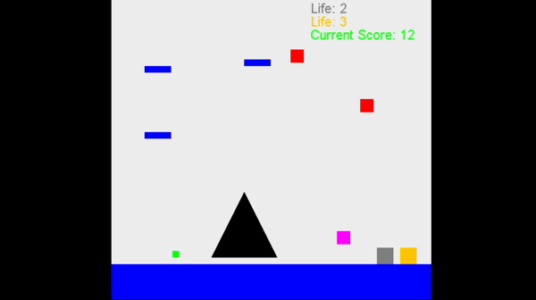
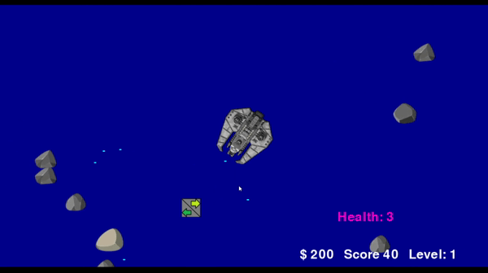

Portfolio
These are projects that I have completed during my academic career.
current Project: LED Display for Schedule.
-
Object Oriented Programming - Jetpac
 For my final project in Object Oriented Programming, I was paired with another student to implement the retro game JetPac. The project was intended to be a culmination of what we learned for the project, and The game involved an astronaut who had to carry fuel to their spaceship while defeating aliens. It t required a lot of coding principles that my partner and I had gathered throughout the class, such as class construction, array lists, and file reading. In addition to this, it was also a great experience with pair programming and communicating with another programmer. I was the “driver” for the project, and was responsible for the majority of programming in the project, while properly implementing ideas from my partner. One of the aspects of our project that I enjoyed was the use of simple text files in order to create playable levels, which allowed for the game to have more levels that are easy to create with parameters. With this system, it was easy to create as many levels as we wanted to showcase the project. The project was done using milestones, and having specific aspects of the game be completed in a timely manner. It was important to be able to communicate our ideas clearly, and make the code legible to another external programmer, and by extension our professors. As a result, most of the problems that we had for our code implementation were easy to understand for the teacher assistant. Finally, we also presented our additional play features, along with out design decisions throughout./p>
-
Intro to Software Development - Meteoroids
For my introduction to software development class, our final project was to create a game using the pygame library. After giving some practice using the library, we were open to completing the game project as we saw fit, as long as it was in a playable state. I was doing well in the software development course, so I would complete the game rather than doing the final exam for the class. It also required a presentation to showcase game features. My project was called “meteoroids” and involved controlling a spaceship to shoot incoming rocks. More rocks come in waves, and powerups can also be used. Moving the ship around was possibly the hardest part, since it required angle properties for pivoting the ship. Along with this, the game includes sound, a simple text UI, and life system. Getting the ship to fire also had this problem. This was my first attempt at a self led project, so it was also a process of keeping and attaining goals for the project. It was a nice first step with working on games and ensuring multiple parts of code work together. Finally, I had to create a video going over the work in the code. Since this was my first time sharing code for a project, it was a first experience for me communicating how the code and game work, and providing reasoning for it that would be helpful. The project was well received by my professor.
-
Personal Project - Twitter Account for daily posts ➚
Tweets by Khyr33BDuring late 2020, there was a silicone shortage due to supply line issues in relation to the pandemic, this affected a variety of computer related industries that relied on microchips, such as the automotive industry. For Christmas, I had bought multiple pc parts, and assembled it with everything except a graphics processing unit, which was also affected by the shortage. After a month of being on a waiting list, I decided to find a method of tracking how long I was on the waiting list, without having to check the specific website. Around the middle of February, I took interest in creating a twitter account to help me become familiar with development on social media platforms. The main concern was to properly program the process of sending a tweet through a system aside from twitter, which had to be done through understanding the Twitter API. I decided to integrate my problem into the project by giving the program one function: every day, send a tweet for how many days that I have been on a waiting list for the graphics processing unit. With this goal in mind, I looked up researching the system of tweets, automation for the program, and learning about date and timing in programming. The project is still ongoing....
-
Cities and Technology - Final Research Paper ➚
During the fall term my freshman year at Rose-Hulman, I took, Cities and Technology which goes over how cities and city life have changed and developed with technological advancements within its infrastructure. The class’s work culminated into a final research project with writing about an aspect of technology and its effects on specific urban areas. For one of the projects leading to the final research paper, I used Chicago’s south shore line to label urban transit areas. This led my final research project to be a comparative research paper of Taipei, Taiwan's transit system to the ones found within Chicago and New York. What was a highlight of researching this paper were the recent reports of the effects of Covid-19 on the different transit systems; while Taiwan was able to implement effective treatment methods and features to prevent the spread of Covid-19, the New York Governor had made negative comments about the city’s metro at the time. The social interpretations and interactions of each transit system are covered in detail, such as safety and efficiency. As an example, Taipei’s endeavor to make a transit system of any kind was initially seen as an impossible undertaking by the government, but is now seen as one of the technical marvels of public transportation today. The project was a great experience with research and analysis, effective writing, and developing an understanding of the effects of technology in longer terms.